Префектура Тиба · Санму · еда
Ushimaru в Санму: итальянская кухня из всего, что растёт и ловится в Тибе
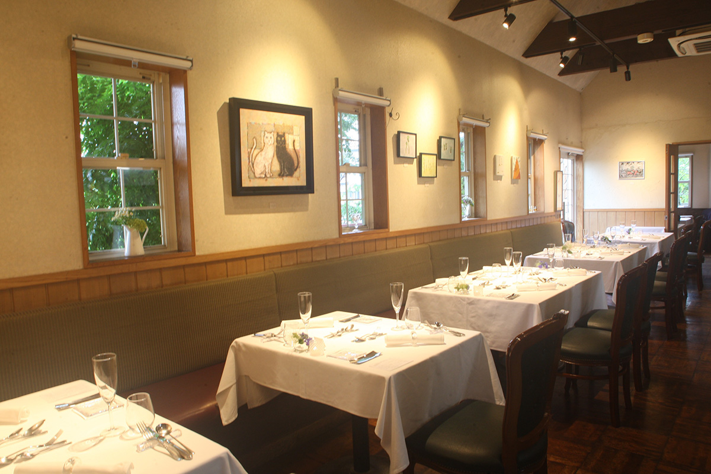
Ресторан Ushimaru стоит в сельской части префектуры Тиба, вдали от больших городов. За ужином здесь едут даже из Токио: шеф Кэн Утия готовит итальянскую кухню почти целиком из того, что дают местные поля, леса и океан.
Шеф
Тиба как кладовая
Тибу, соседку огромного Токио, привыкли считать его огородом. Цифры это подтверждают: в 2014 году префектура была четвёртой в стране по стоимости сельхозпродукции и девятнадцатой по улову. Ценят здесь не только количество, но и качество. Появились поставщики, которые выращивают овощи по заказу поваров и точно рассчитывают время сбора и доставки. А раз продукты так хороши, всё больше поваров переносят свою работу в Тибу.
Кэн Утия, шеф Ushimaru, один из первых среди них. Ресторан находится в Санму, небольшом городе у побережья Кудзюкури на востоке префектуры. Ushimaru открылся в 2000 году как ресторан теппанъяки, а в 2008 году, когда пришёл новый шеф, стал итальянским и сделал ставку на местные продукты. Шеф старается лично знакомиться с теми, кто растит овощи, ловит рыбу и откармливает скот.
Слава приходила постепенно, и гостей из Токио становилось всё больше. За десять лет ресторан два года подряд получал бронзовую награду японского гастрономического портала Tabelog. Местные жители видят здесь привычные продукты в таком виде, какого не ожидали, а гости из столицы пробуют редкие продукты Тибы в тонкой подаче. Именно на этих двух опорах держится успех Ushimaru.
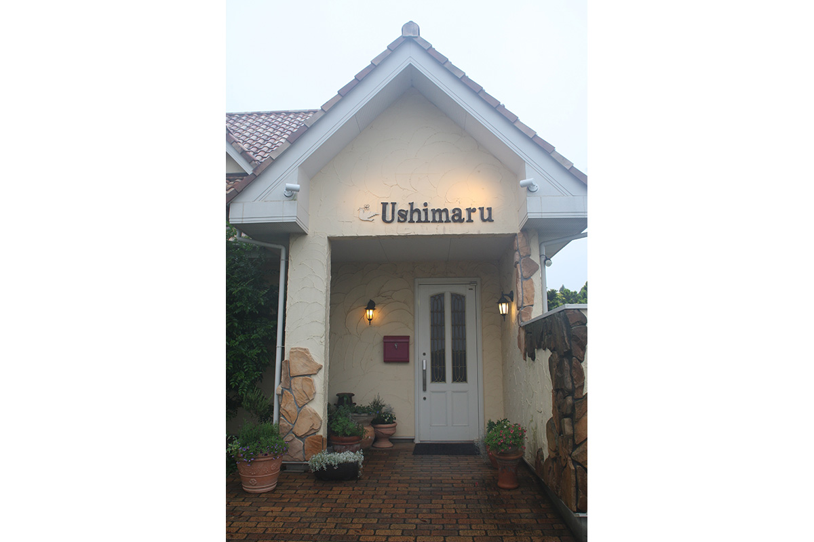
Продукты
Что приносят леса, реки и океан
Ресторан, который строится на местных продуктах, требует, чтобы повар хорошо знал свою землю. Даже уроженцы края часто не знают, что именно вокруг них растёт и ловится, а их сведения нередко застряли в детстве. Шеф родом из Ниигаты и никак не был связан с Тибой. Поэтому он годами собирает сведения о нужных продуктах сам, объезжая хозяйства и побережье.
Перед съёмкой ресторанный критик, писавшая об Ushimaru, попросила показать местные продукты такими, как они есть. На стол легли несколько видов редких грибов, которые шеф собрал сам, дикие угри и живые съедобные лягушки. Лягушки оказались на удивление крупными и красивыми. Летом грибов в окрестных лесах много, а ранним летом с рисовых полей доносится лягушачий хор. Мясо лягушек лёгкое и тонкое на вкус.
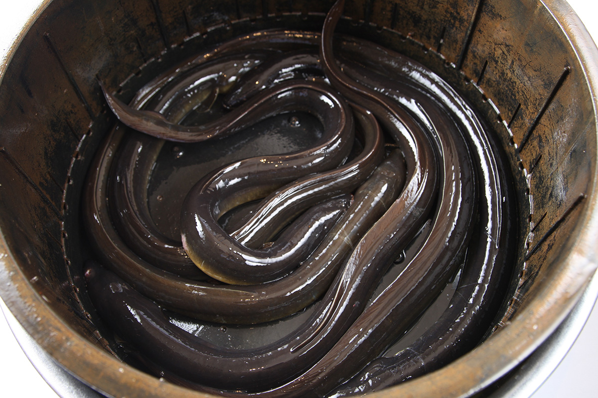
Мясо в Ushimaru джерсейское. Бычков джерсейской породы 18 месяцев растит фермер, потом туши разделывают, а филейную часть от шеи до лопатки ресторан выдерживает сам. Владелец ресторана вырос в семье молочных фермеров, которые держали джерсейских коров.
Есть и продукт, которым шеф особенно гордится: соль. Он вываривает её сам из морской воды Кудзюкури в большом котле, долго, пока не останется одна соль. Её не очищают, поэтому вкус у неё мягкий и круглый.
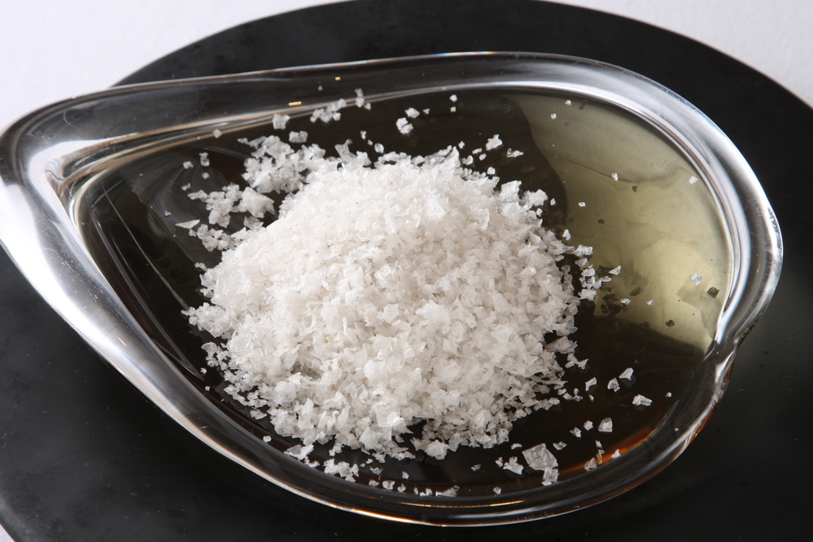
Кухня
Угли, стекло и свежая паста
Хорошие продукты здесь только начало. Стиль шефа подчинён одной задаче: раскрыть продукт. Он не спеша готовит на углях или в печи, и блюдо само собой становится итальянским. На тарелке рядом с главным продуктом только то, что его подчёркивает.
Угли тоже работают по-особому. Шеф не только регулирует жар, но и сбрызгивает продукт водой, так что он одновременно жарится и томится. Поэтому угорь получается сочным и пышным, хотя его жарят прямо над огнём.
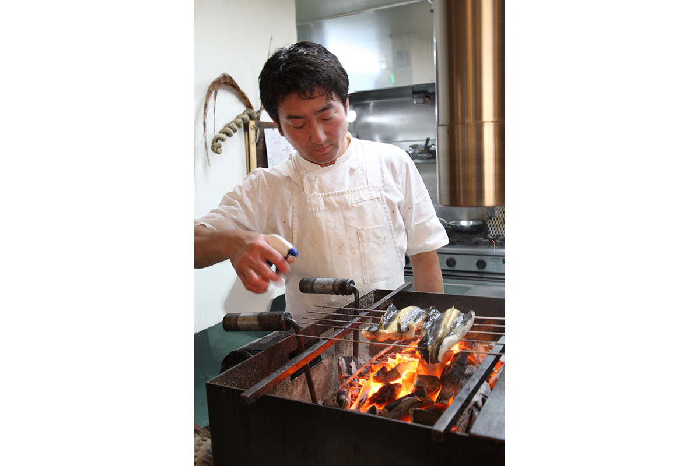
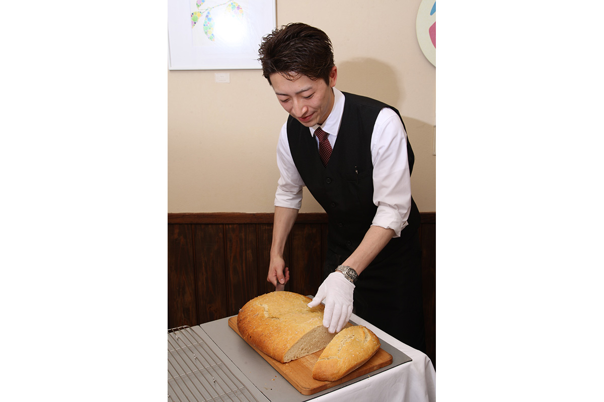
Подают блюда в основном на посуде местной марки Sghr Sugahara: прозрачное стекло и выразительная еда на нём. Гостей из Токио больше всего удивляет, что уровень кухни здесь выше, чем во многих ресторанах столицы.
Для пасты берут два сорта японской муки, «Юмэхосино» и «W8». Пасту подают после мяса, поэтому порцию подстраивают под гостя: можно взять совсем немного, на пробу, а можно попросить полную тарелку. Для фокаччи к тем же сортам добавляют муку «Норин 61» из Тибы. Чтобы вкус муки раскрылся полностью, фокаччу пекут одним большим караваем на всех гостей и посреди ужина выносят в зал горячей.
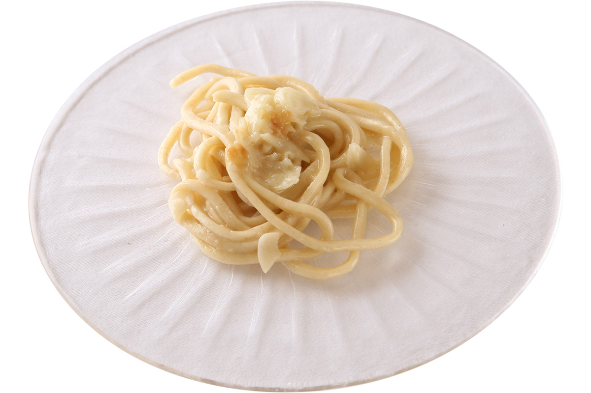
Последнее, о чём нельзя забыть, это мороженое. Владелец знает, каким вкусным бывает мороженое из свежего молока джерсейских коров, и хочет, чтобы его попробовали все. Поэтому в каждом десерте Ushimaru есть мороженое, а в 2018 году его продавали и в стаканчиках.
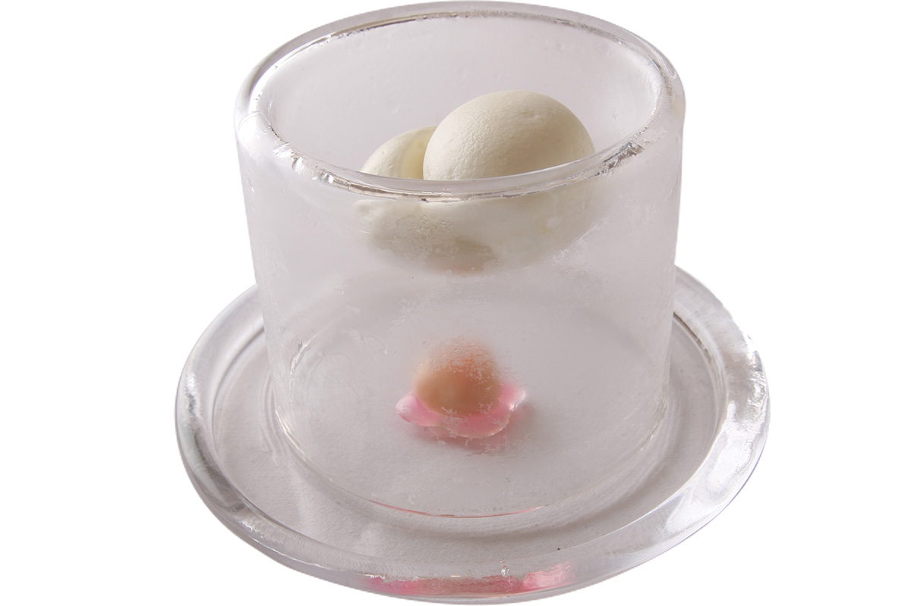
Ресторанный критик советует просто съездить в Ushimaru и почувствовать, на что способна провинция. Ресторанная культура принадлежит не только городам: самые крепкие примеры успеха как раз в глубинке.
Курс
Ужин из продуктов Тибы
Состав курса за 10 000 иен (цена 2018 года без налога и сервисного сбора) зависит от того, что удалось достать в этот день: меняются и число блюд, и сами блюда. Обычно за одним столом подают один курс, а все блюда начинают выносить одновременно. Вина в основном японские, а в пару к блюдам могут предложить и сакэ или сётю. Есть вино из Тибы, с винодельни «Сайто Будоэн». Если осталось место, после мяса можно заказать сыры: Тиба славится молочным хозяйством, и местные сыроварни популярны даже в Токио.
Летний курс, описанный ресторанным критиком, начинался с диких грибов, которые шеф собрал сам, и брезаолы из джерсейского бычка. К ним подали рубец.
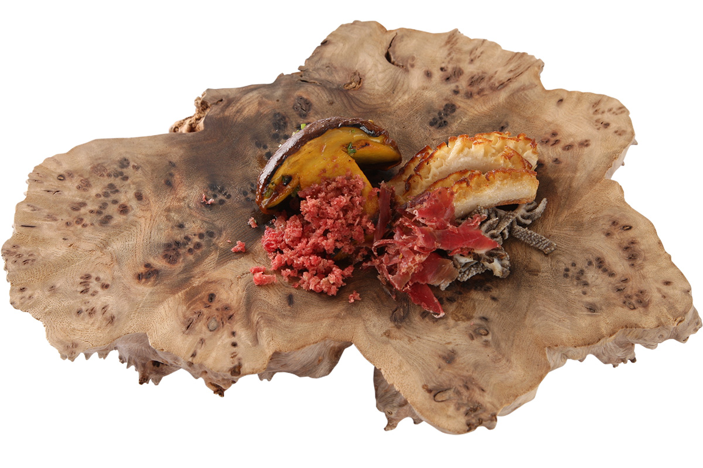
Дальше шли дикий угорь из Кудзюкури на углях с домашним тёртым хреном и солью с японским перцем сансё, суп из цветков цуккини с картофелем и моцареллой на бульоне из мелкой рыбки сирасу и лягушка с лисичками. Лягушку лишь солят и быстро прогревают, запаха у неё нет совсем, а вкус лёгкий, как у куриной грудки.
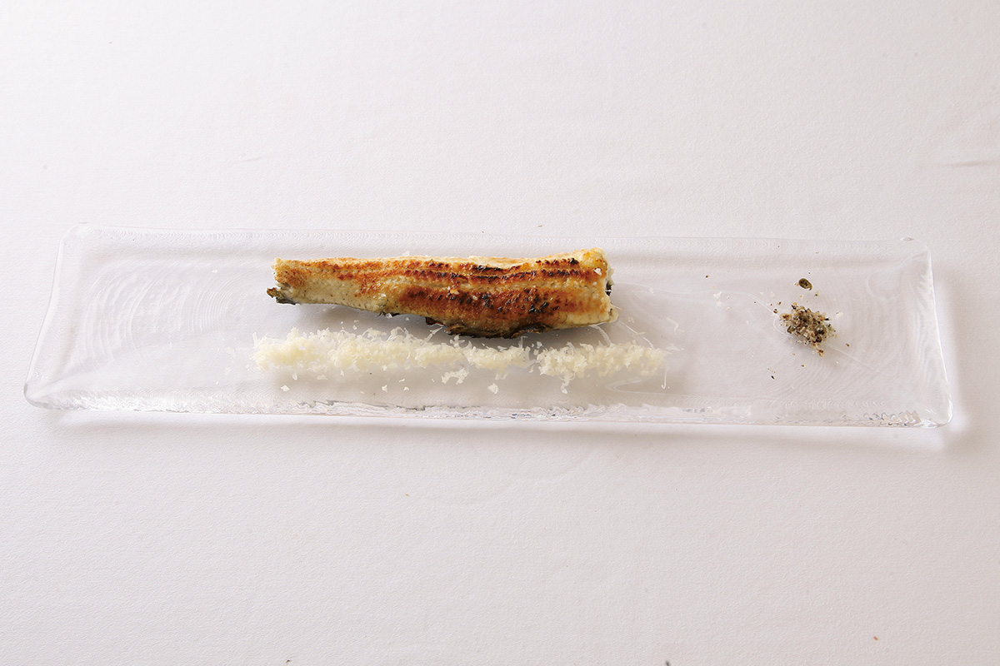
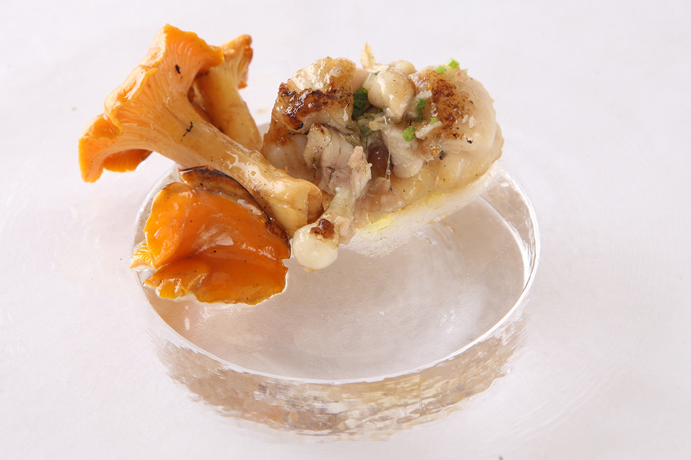
Потом подали устрицу, золотистого берикса из порта Кацуура, зажаренного прямо в чешуе до хруста, и салат примерно из десяти сезонных овощей с огорода ресторана и соседних ферм. Главным мясным блюдом стал джерсейский бычок на углях. Мясо нежное, а соус сальса верде с толчёным сансё добавляет свежести.
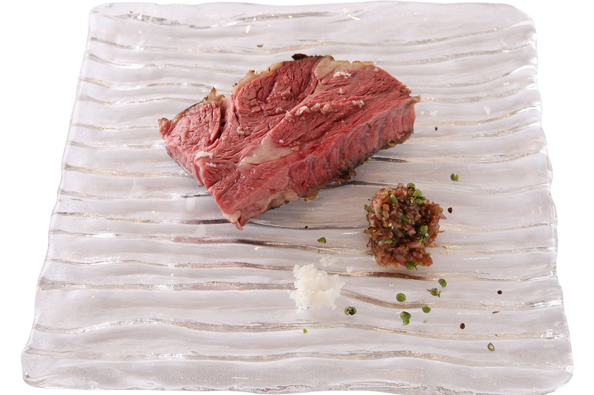
Перед пастой подают щербет из сансё и молочной сыворотки, лёгкий и кисловатый, а завершает ужин десерт с мороженым.
Ushimaru
- Адрес
- префектура Тиба, Санму, Мацуо-мати, Кигатана, 1307-2
- Телефон
- +81 479-86-1222
- Часы работы
- 12:00–14:00 (последний заказ), 18:00–21:30 (последний заказ)
- Выходные
- среда и второй вторник месяца; в четверг только ужин
- Цены / Вход
- обед 3 800 и 10 000 иен, ужин 6 000 и 10 000 иен; в субботу, воскресенье и праздники днём и вечером 6 000 и 10 000 иен; налог и сервисный сбор 10% отдельно
Фото: Мунэаки Маэда.